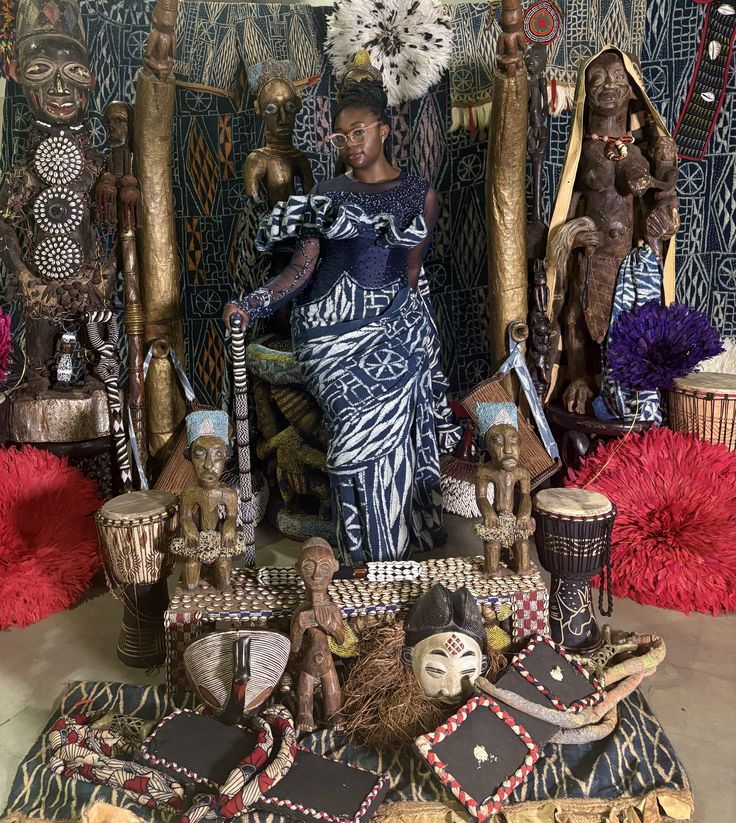
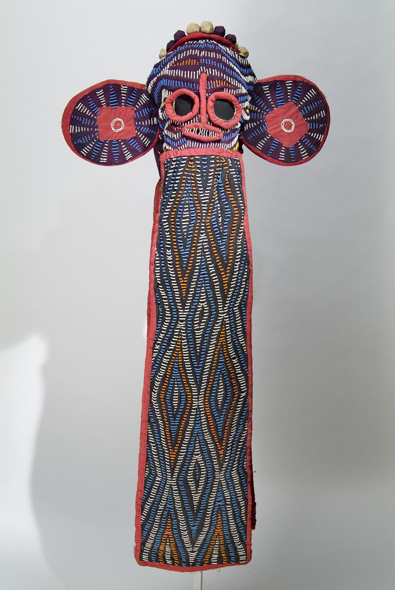

Traditions, histoire, art et identité d ’un peuple fascinant.

Explorez les cérémonies ancestrales et leur signification.

Découvrez leur symbolique et leur importance culturelle.
Des plats authentiques riches en saveurs et traditions.